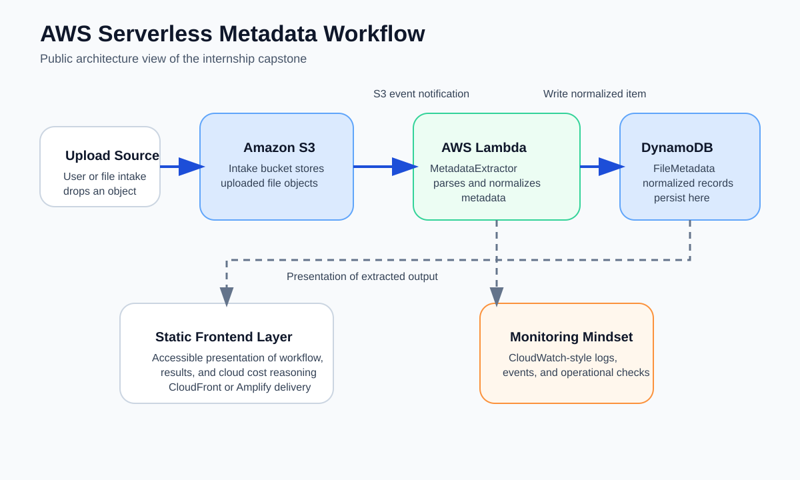
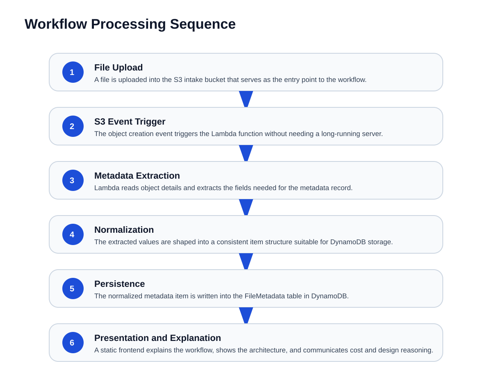
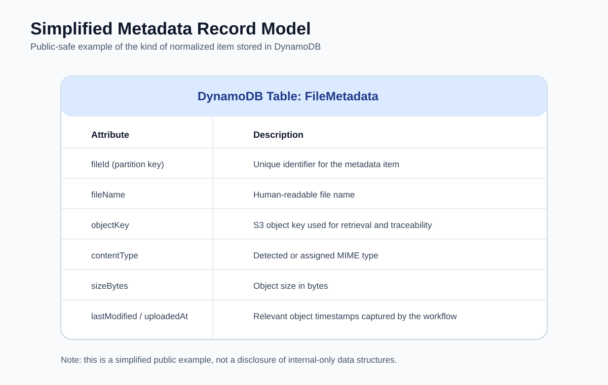
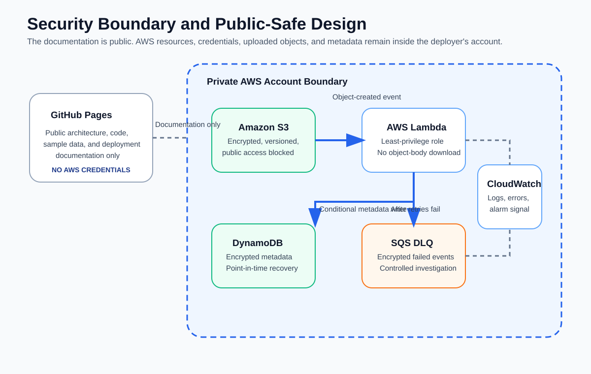
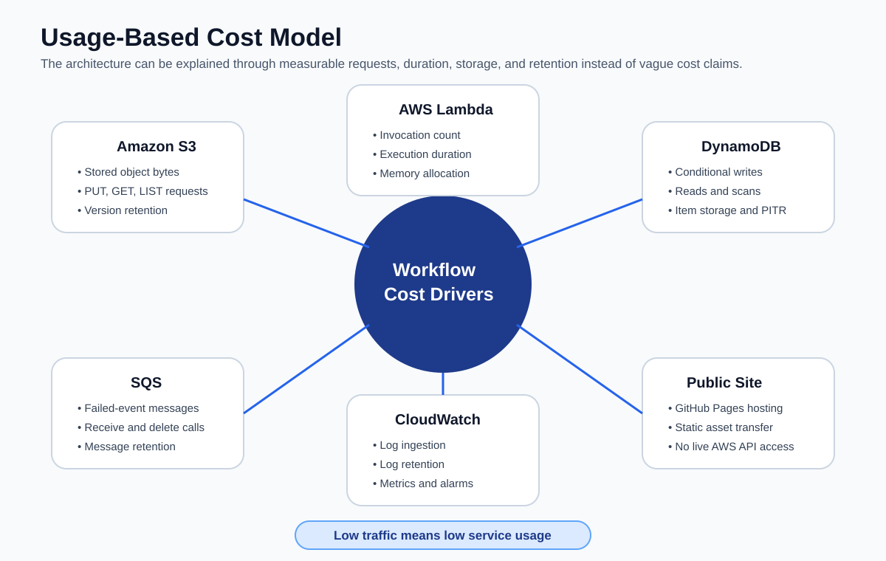

01
Upload
An encrypted, versioned, ACL-free S3 bucket accepts an object under the configured intake prefix.
AWS Support Engineering Internship Capstone
The permanent technical walkthrough behind my AWS internship resume bullet: a real event-driven cloud project reconstructed as a deployable AWS SAM application with tested Python, idempotent writes, retries, an encrypted failure queue, actionable monitoring, architecture graphics, official AWS verification, and complete operating documentation.
The problem
The workflow reacts when a file arrives under a configured Amazon S3 key prefix, reads current object-level metadata, normalizes it into a documented schema, and stores an idempotent record in DynamoDB. It is event-driven, low-operations, measurable, and intentionally limited to metadata rather than full file-content processing.
01
An encrypted, versioned, ACL-free S3 bucket accepts an object under the configured intake prefix.
02
Lambda validates the event, URL-decodes the key, and reads object headers through HeadObject.
03
A deterministic record identity and conditional DynamoDB write make repeated delivery safe.
System design
S3 owns file intake, Lambda owns short-lived processing, DynamoDB owns metadata persistence, and the monitoring and failure path make asynchronous behavior visible and recoverable.


Real implementation
The repository includes AWS SAM infrastructure, a Python Lambda handler, unit tests, a representative S3 event, repeatable developer commands, GitHub Actions validation, and a dependency-free static-site release audit.
incoming/HeadObject requestsmetadata_table.put_item(
Item=item,
ConditionExpression="attribute_not_exists(RecordId)",
)
# A repeated object identity raises ConditionalCheckFailedException.
# The function logs it as a safe duplicate instead of writing twice.ruff check src tests scripts
pytest --cov=src/metadata_extractor --cov-fail-under=85
sam validate --lint
sam build
python scripts/validate_site.pyData contract
Each item uses RecordId as the DynamoDB partition key. The ID is derived from the bucket,
decoded object key, version ID, and ETag so repeated delivery is safe while distinct object versions remain distinct.
{
"SchemaVersion": "1",
"Bucket": "metadata-workflow-uploadbucket-example",
"ObjectKey": "incoming/quarterly report.pdf",
"FileName": "quarterly report.pdf",
"EventName": "ObjectCreated:Put",
"SizeBytes": 4096,
"ContentType": "application/pdf",
"ETag": "0123456789abcdef...",
"StorageClass": "STANDARD",
"VersionId": "example-version-id",
"UserMetadata": {
"department": "support"
}
}
Operational behavior
Lambda handles the S3 event and attempts the conditional metadata write.
Unexpected failures are raised so Lambda asynchronous retry behavior applies.
An event that still fails is delivered to the encrypted SQS failure queue.
CloudWatch monitors errors, throttles, and visible failed events. Optional SNS email requires confirmation.
The runbook requires root-cause correction, safe replay, verification, and only then message deletion.
Returns a successful duplicate outcome rather than creating another item.
Successful records remain stored while the invocation reports failed record indexes for retry.
The S3 bucket and DynamoDB table are retained instead of being silently destroyed with the stack.
Security and public boundaries
GitHub Pages contains documentation, sample events, code, writing previews, and verified links. It contains no AWS credentials, no direct bucket or table access, no production customer data, and no confidential Amazon implementation material.

Cost reasoning
The workflow breaks cost into the inputs that actually change: storage, object versions, requests, function duration, database operations, failure traffic, logs, alarms, recovery features, retention, and transfer.

From my AWS writing
These previews point to the canonical articles on my personal site. This project does not duplicate the full posts; it gives readers the right next article based on the question they are trying to answer.

The training environment, daily troubleshooting loop, capstone workflow, service boundaries, and the work I do not claim to have owned.

A practical resource, alert, cleanup, and billing-verification checklist.

The assistant that grounds recruiter answers about this internship and the rest of my work.

A 2026 free-tier comparison based on running small projects across all three.
Proof and platform verification
See which repositories, articles, certifications, tests, and live pages support each part of the internship story, along with what they do not prove.
Check duplicate-event behavior, HeadObject, Lambda retries, SQS destinations, conditional DynamoDB writes, S3 ownership, PITR, log retention, and alarm notifications against official AWS documentation.
Deploy it
Use an AWS account you are authorized to manage. Review the template and CloudFormation change set before creating resources.
make install
make lint
make test
make validate
make build
python scripts/validate_site.pysam deploy --guided \
--stack-name aws-serverless-metadata-workflow \
--region us-east-1aws s3 cp sample.txt \
s3://YOUR_UPLOAD_BUCKET/incoming/sample.txt \
--content-type text/plain \
--metadata source=pages-demoaws logs tail /aws/lambda/YOUR_FUNCTION_NAME \
--since 10m --follow
aws dynamodb scan \
--table-name YOUR_METADATA_TABLE \
--max-items 10Project history
Early work connected S3 object information with a DynamoDB metadata table and considered Lambda automation.
The project became a serverless metadata workflow using S3, Lambda, DynamoDB, a static frontend layer, and cloud cost reasoning.
The documented flow was S3 upload to Lambda extraction to DynamoDB storage, with monitoring, security, testing, and presentation.
The project gained deployable infrastructure, tested code, failure handling, alarms, writing, proof, official sources, SEO files, a design system, and GitHub Pages release checks.
Recruiter and technical FAQ
No. The internship work was completed in isolated training and project environments. This public reconstruction does not claim production customer ownership or access.
No. It is a public reconstruction and expansion based on the real architecture and work completed during the internship. Confidential and internal-only material is intentionally excluded.
It validates the S3 event, decodes the object key, calls HeadObject, normalizes object metadata, derives a deterministic identity, and performs a conditional DynamoDB write.
No. The current implementation reads object headers and does not download the full object body. File-content parsing would be a separate requirement and architecture decision.
The function uses a deterministic SHA-256 RecordId and attribute_not_exists(RecordId). A repeated identity is logged as duplicate and treated as a successful idempotent outcome.
Lambda applies the configured asynchronous retries and event-age limit. An event that still fails is sent to an encrypted SQS destination, and the queue-depth alarm can notify a confirmed SNS email subscriber.
No. GitHub Pages serves static files. The site contains no AWS credentials and provides no direct access to S3, Lambda, DynamoDB, SQS, CloudWatch, or an AWS account.
Start with the internship article for context, the proof page for evidence, the source repository for implementation, and the verified-source page for current AWS service behavior.
Documentation library
Service responsibilities and event flow.
ADR 001Why the system is event-driven and serverless.
ImplementationCore logic and public reconstruction decisions.
DeploymentValidation, parameters, alerts, launch, verification, updates, and cleanup.
Data contractRequired fields, optional fields, identity, and privacy.
OperationsIncidents, failed events, replay, monitoring, and changes.
TroubleshootingPages, SAM, permissions, events, duplicates, and cleanup.
Security and scopePublic-safe boundaries and truthful project claims.
Cost modelMeasurable usage drivers and architecture consequences.
TestingWorkflow, coverage, CI, and site-release validation.
Verified AWS sourcesClaim-by-claim mapping to current official documentation.
Design systemTokens, components, accessibility, SEO, illustration, and content governance.
AccessibilitySemantic structure, diagrams, keyboard access, and clarity.
Project historyThe recovered precursor, internship capstone, and public reconstruction.
Interview guideThirty-second, two-minute, and technical explanations.
Security policyResponsible reporting and deployment responsibilities.
ContributingQuality, testing, claim, and security requirements.
Visual design systemSee the tokens and components rendered in the browser.
The honest version
This project demonstrates cloud architecture, event-driven processing, operational thinking, cost awareness, testing, documentation, official-source verification, and the discipline to separate verified work from exaggerated claims.